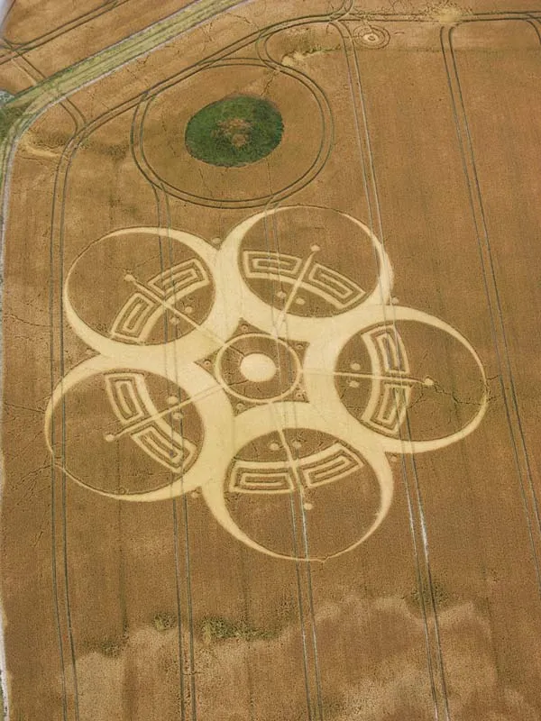
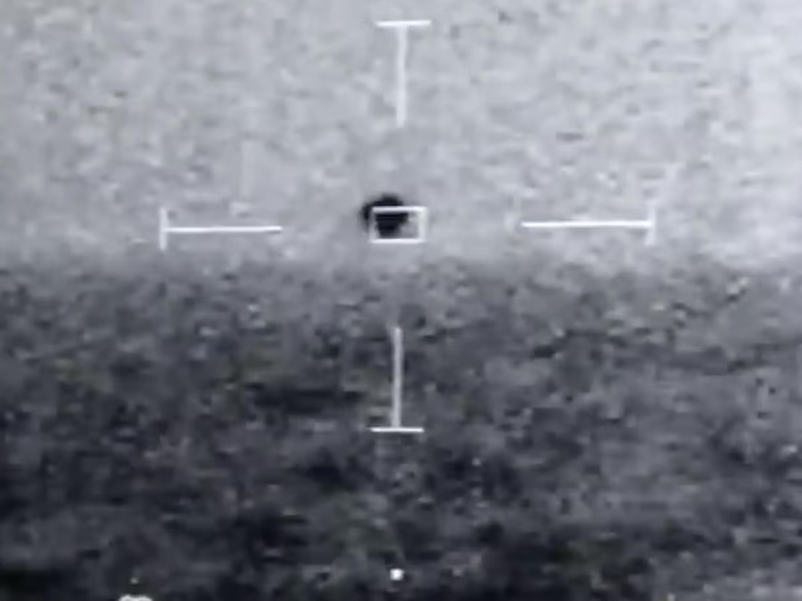

By underhood
After thousands of years of speculation aliens are finally confirmed to be real, everything has
changed, but is it for the better? First what we know for sure, America has been working with alien
craft for decades, entertainment has been preparing us for full disclosure and not all aliens are
the same species. Think Men in Black but on a smaller (maybe bigger - Editors note) scale.
AI generated image of the Men in Black with Aliens
How do we know it? For decades people have had testimonies of being abducted, finding IMPOSSIBLE TO
RECREATE crop circles, animal mutilations, big groups all seeing the same giant flying crafts above
their cities, lies about balloons and swamp gas, ancient paintings with flying objects randomly
inserted, ex government officials claiming they saw them, amazing drawings in mountains, reported
bodies in Peru and many more amazing, undeniable things. Now we have actual government
whistleblowers blowing their whistles. David Grusch has all but confirmed aliens are real. (He calls
them Non Human Intelligence, but we know he means aliens. - editors note)

Crop Circles
Grusch helped create a way for whistleblowers to come forward with information on UAPs with the
American congress. (He calls them UAPS but we know he really means UFOs - editors note). He then
reported to congress his findings and has 40 very credible witnesses. He says that they create
and send unmanned drones from the ocean and they monitor the Earth, they are currently most
interested in Nuclear weapons and other conflicts. Reports go back to the Foo Fighters seen during
World War 2, they were UFOs seen by Allied fighter pilots in the sky. He says they don’t come from
far away but use inter-dimensional travel, similar to travelling back and forth from the dark
universe in Star Trek. He did not say if we are the dark universe or not.
David Grusch Testifying to Congress
Recently in Mexico some alien bodies have been presented that were found in Peru. The people who
have examined them are saying they are non human. Around were found but there are still some
sceptics, I am not sure of how real they are. It may be a hoax to undermine the current
disclosures. I just didn’t want to leave anything out.
Alleged Alien body found in Peru
Where do the aliens come from? Some come from far distant galaxies most likely and others come from
other dimensions similar to above. Maybe its more like the Marvel multiverse, I am not sure how
many dimensions there are at this time. I barely understand this one with all of this new
information. They have been coming here for at least thousands of years and have under ocean bases
where they create their drones. This is why most sightings are near the coast.

UFO in military planes sights over the ocean.
So now what? I think we just keep on living until the words really out. Some reports say they feed
on our emotion and they don’t like our love, so maybe try and be nice to each other. Look for hints
in media, I think the stories where the aliens are harmed by water, think Signs and War of the
Worlds, are there to throw us off their trail. Movies like Men in Black to make us think its
ridiculous, movies like Aliens to make us think they are mindless monsters. Star Trek gave us a
good idea of what we should hope for, and Gene Rodenberry was a revolutionary for his vision. Its
a slow ride to the truth, but it seems like we are very close to finding it all out.
-underhood